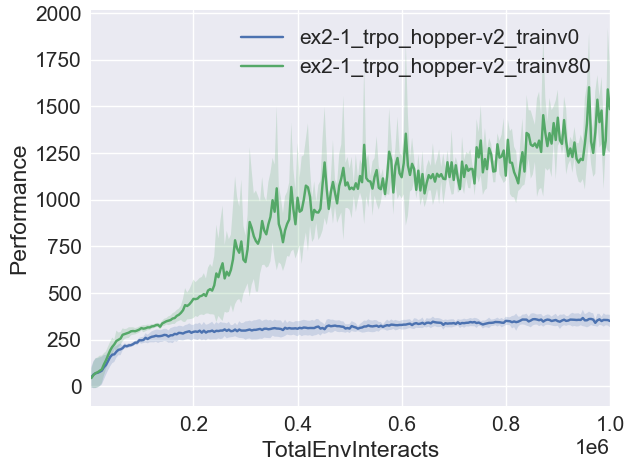

Solution to Exercise 2.1¶

Learning curves for TRPO in Hopper-v2 with different values of train_v_iters, averaged over three random seeds.
The difference is quite substantial: with a trained value function, the agent is able to quickly make progress. With an untrained value function, the agent gets stuck early on.